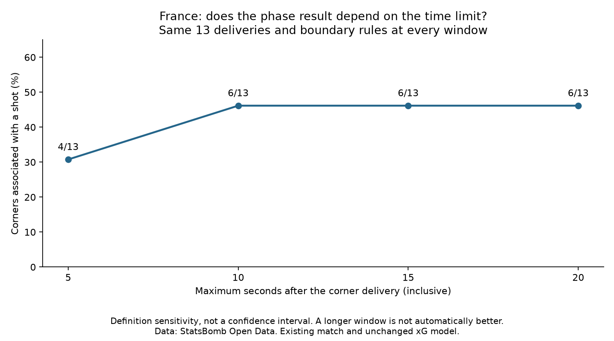

Football analyst training · Project lesson 37
Would the result change with another time limit?
We keep the same deliveries and phase boundaries, changing only the time limit.
Completed assignment
- 5 seconds: 4/13 corners with a shot, 30.8%.
- 10 seconds: 6/13, 46.2%.
- 15 seconds: 6/13, 46.2%.
- 20 seconds: 6/13, 46.2%.

Two details worth understanding
There are six shots at ten seconds and seven at 15 seconds, while both windows still involve six corners. The extra attempt belongs to a corner phase already containing a shot.
A shot at 5.003 seconds is outside a five-second window. We use the original millisecond timestamps, not rounded clock labels.
The analyst takeaway
Report the rule and how much the result depends on it. A larger percentage does not mean a better rule. This is sensitivity analysis, not a confidence interval or new validation: no extra matches were added.
Run 37_corner_window_sensitivity.py in Spyder. It reuses the previous phase function at each chosen limit and checks that 15 seconds reproduces the earlier result.
The worked assignment is complete with assistance. Ask your teacher for more detail on any new concept or code line.